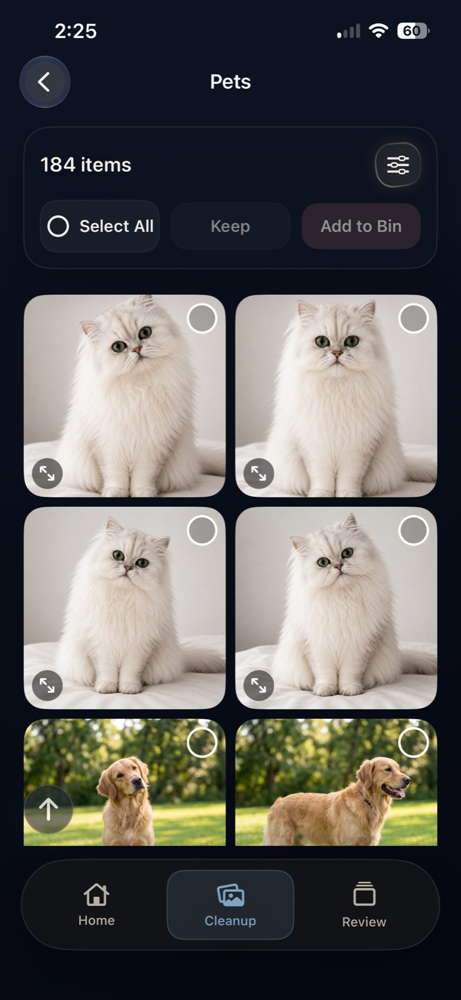

A little less clutter. A lot more clarity.
Keep the
moments.Lose the clutter.
The private iPhone photo cleaner that helps you find the repeats, choose your favorites, and make room for what’s next.
See how it worksAll cleanup tools are currently free. iOS 17+

Your call.
01 / Bring the repeats into focus
One moment.
Too many
versions.
You take a few. Then a few more. CleanLens brings related shots together, so choosing what to keep feels simpler.
 The head tilt.
The head tilt. Another angle.
Another angle. That little smile.
That little smile.
Compare the shots. Keep your favorites.
Duplicates are copies. Similar photos are different takes.
CleanLens helps you review both, with you in control.
02 / A place to begin
Your whole library.
Smaller decisions.
Start with the photos you know. Browse a category, narrow the view, and work through a little at a time.
Real screens. Real control.
Take a closer look at CleanLens.
Pets

again. And again.
Bring pet photos into one view. Compare the little differences and choose the ones you love.
Food

All twelve photos?
Revisit the meals worth remembering. Review the extra shots in a dedicated Food category.
Filters

Keep your boundaries.
Sort by date or size. In supported folders, hide favorites, people and faces, or narrow to a date range.
- Exact duplicates
- Screenshots
- Saved from Apps
- Large videos
- Documents
03 / Nothing leaves without you
The final choice is yours.
A favorite to keep. A few extras to review.
See how a little cleanup stays in your hands.
Keep this oneAnother takeAnother angle01 / CHOOSE YOUR FAVORITE
Some moments
are keepers.
Compare the small differences. Keep the photo you love, then decide which extras you could live without.
Your favorite stays in your library.
KeptWaiting for your review
02 / SET THE EXTRAS ASIDE
A holding place.
Time to decide.
Add selected photos to the CleanLens Bin. They stay in your photo library while you take another look.
Nothing has been deleted.
Your confirmation comes last.
03 / REVIEW BEFORE DELETING
Still your call.
Right to the end.
Review the Bin and change your selection if you need to. When you’re ready, confirm deletion in the iOS confirmation dialog.
No automatic deletion.
Deleted items go to Recently Deleted in Apple Photos, where recovery is available for a limited time. Read the safe cleanup guide ↗
Personal photos. Personal space.
Your memories
aren’t our business.
Photo analysis happens on your device. CleanLens doesn’t upload your library for analysis, and you don’t need an account to get started.
Our privacy promiseA little space goes a long way
Make room for
what’s next.
Keep taking the photos.
Let CleanLens help with the extras.
All cleanup tools are currently free.
For iPhone and iPad · iOS 17 or later
Is CleanLens free?
Yes. All cleanup tools are currently free, including similar-photo cleanup, bulk actions, sorting, and filters. You can download CleanLens from the App Store.
Will CleanLens delete anything automatically?
No. You choose what moves to the CleanLens Bin, review your selection, and confirm the final deletion in the iOS confirmation dialog.
Do my photos get uploaded?
CleanLens analyzes photos on your device and does not upload your library for analysis. Apple Photos may retrieve originals from iCloud when needed.
How are similar photos different from duplicates?
Duplicates are copies of the same photo. Similar photos can be different takes of a moment — a new expression, angle, or pose. CleanLens groups them for you to compare. Learn more.
Can I recover a photo after deleting it?
Before deletion, you can change your choices in CleanLens. After deletion, check Recently Deleted in Apple Photos. Recovery is time-limited; permanently deleted items cannot be recovered there.
When does my iPhone storage become available?
Items in Recently Deleted can continue using storage until they are permanently removed. Make sure you want to give up the recovery option before clearing that album. Read the storage guide.
Field notes
A clearer camera roll
starts with a little know-how.
Practical guides for your photos,
your storage, and your peace of mind.